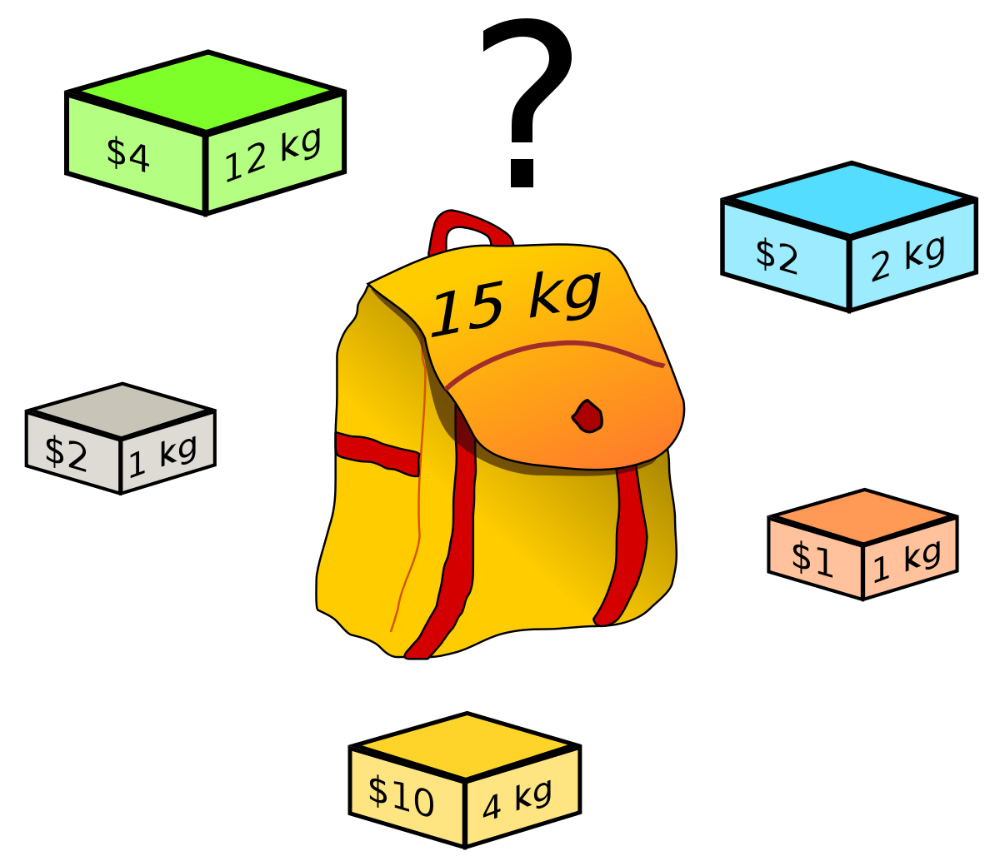

اول خیلی خلاصه توضیح بدم مسئله کولهپشتی چیه؟! یک دزد رو در نظر بگیرید که با یک کولهپشتی وارد خانهای شده و میخواد وسایل قیمتی رو برداره و داخل کولهاش قرار بده. کوله این دزد ظرفیت محدودی داره، بنابراین نمیتونه هر چیزی که میبینه رو برداره! فرض هم میکنیم ظرفیت این کوله 50 کیلوگرم باشه. وسایلی که توی این خونه وجود داره هر کدوم یک وزن (weight) و یک ارزش (value) دارند. اگر به زبان ساده بخوام بگم، هدف مسئله کولهپشتی اینه که یه جوری وسایل رو انتخاب کنیم که بیشترین سود ممکن رو کسب کنیم. فکر کنم یه مثال ساده بزنم قضیه جا بیفته. تصویر زیر رو در نظر بگیرید :

اینجا ما نمیتونیم همه بسته ها رو داخل کیف قرار بدیم. چرا؟ چون ظرفیت کولهپشتی 15 کیلوگرمه و مجموع وزن بسته ها 20 کیلوگرمه! حالا جواب این مسئله چیه؟ یعنی چه جوری بسته ها رو انتخاب کنیم که بیشترین سود رو کسب کنیم؟ اگر همه بسته ها به جز بسته سبز رنگ رو انتخاب کنیم، بیشترین سود ممکن رو کسب میکنیم (15 دلار) و مجموع وزن بسته ها هم میشه 8 کیلوگرم که کمتر از 15 کیلوگرمه. دیگه وارد جزئیات نمیشم. اگر دوست دارید بیشتر با مسئله کولهپشتی اشنا بشید توی گوگل سرچ کنید!
خب، حالا بریم سراغ مسئله خودمون. ما میخوایم یه بسته اینترنت همراه بخریم. این بسته ها حجم و قیمت دارند. فرض کنید ما 200 هزار تومن پول داریم. میخوایم از بین تمام بسته هایی که اپراتور ارائه کرده، یه جوری انتخاب کنیم که با این 200 هزار تومن بیشتر حجم ممکن رو به دست بیاریم! توی این مسئله قیمت بسته ها میشه وزن (weight) و حجم بسته ها میشه ارزش (value) در واقع میخوایم یه جوری بسته ها رو انتخاب کنیم که وزنشون (قیمت) از 200 هزار تومن بیشتر نشه و ارزش (حجم) بسته ها هم بیشترین مقدار ممکن باشه. برای انجام این کار، من لیست بسته های ایرانسل، رایتل و همراه اول رو جمع آوری کردم و این الگوریتم رو روی پیاده کردم.
برای استفاده از این روش سایت زیر رو باز کنید و اپراتور های مورد نظرتون، بازه های زمانی بسته ها، بودجهای که مد نظرتونه و حداکثر تعدادی که از هر بسته میشه خریداری کرد رو مشخص کنید و دکمه submit رو بزنید.
nb.neighbours()
| title | date | |
|---|---|---|
| prev | مصورسازی مصرف اینترنت همراه اول! | ۱۴۰۰/۰۴ |
| next | یافتن نقطهٔ بهینه موقع گرفتن اسنپ! | ۱۴۰۰/۰۵ |